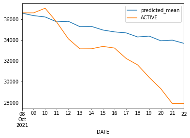
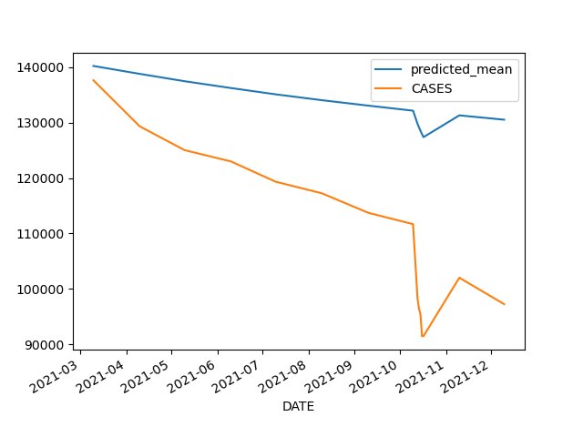
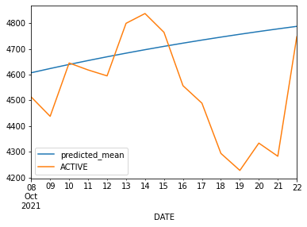
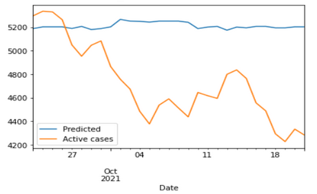
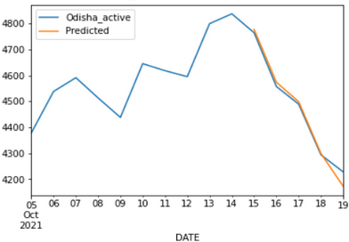
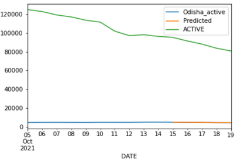
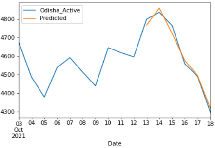

State level covid cases forecasting and finding out a correlation of a hotspot state and a relatively smaller state
A project report as part of course CS460
Nelson Kshetrimayum Muhammed Jabir T
Dated: 14-11-2021
Objective
To predict and forecast covid cases timeline for states in India.
To study the correlation between states covid cases timelines and take into account the historical data available of a hotspot state to predict the timeline of a relatively smaller state.
Dataset
We have used data from Covid19india.org which has made the data publicly available. Site link
Testing data for each state
Cases for each state
Vaccination data
Challenges
Covid-19 forecasting is not a univariate problem
Yes, present active cases are dependent on past cases. But,
Increase or decrease in recovered cases or death due to covid is obviously related to newly infected cases and vice versa.
A particular state’s infected cases are correlated to other states depending upon location, migration and travel status etc.
Climate has to do with viruses properties such transmissibility. Therefore Covid trends are crucially affected by exogenous variables like temperature and humidity!
And importantly, data of number of tests conducted should be taken into account.
Approach
Using ARIMA, specifically auto_arima function from pmdarima library and following what has been done in one of our reference Short-term forecasting of the Covid-19 outbreak in India, we have been able to generate a prediction for the following 15 days.
We also used VARMAX to forecast a covid cases timeline for different states.
Similarly using random forest regression from sklearn library an attempt was made to forecast active cases timeline for states.
We implemented a Random forest model to find the correlation to a another state from a heavy infected (hotspot) state.
We did a theoretical study of compartmental models of infectious disease, SEIR model mainly and tried to implement using neural networks and deep learning. This was not completed due to the time constraints and inexpertise on the theories.
Results
Using ARIMA to forecast for the following 15 days
From the data we have collected from covid19india and following what has been done in one of our reference Short-term forecasting of the Covid-19 outbreak in India, we have been able to generate a prediction for the following 15 days.
For this we have used ARIMA, specifically auto_arima function from pmdarima library is used to find the best model and the using ARIMA from statsmodels we have trained and tested.
First we tried on the dataset for India and checked if we can get satisfactory results then proceeded the same procedure with state datas.
Predicted vs Actual data for last 10 days



Fig: (i) Maharastra (R-sq : 0.2281; MSE : 6453065.06) (ii) Kerala (R-sq : 0.0538; MSE : 128921666.67) (iii) Odisha(R-sq : -0.98; MSE : 72690.91)
This model cannot deliver accurate results and thus can’t conclude with any justifiable implications. We can see that the model correctly shows the uptrend or downtrend in some cases but in multiple other cases we get negative R-scores. So we cannot fully rely on this model.
Random forest regression from sklearn library is used to obtain a forcast on Odisha active cases data
For different testing sets, model score differs but huge extends and sometime also gives a negative score.

Fig: Actual and predicted active cases in Odisha
The model fails to achieve desired results and thus can’t conclude with any justifiable implications, even in most cases it correctly shows the uptrend or downtrend but in multiple cases gives conflicting results with the actual data.
Implementing Random forest model to find correlation in states
We tried to predict the cases for Odisha by accounting the historical data for Kerala.
Surprisingly it give very good results with model scores greater than 0.9 for different testing sets.


Fig: Actual and predicted active cases in Odisha considering Kerala’s data (ii) ACTIVE corresponds to Kerala's active cases
Discarding the forecasting using random forest, with the data forecast from VARMAX we can run this model and apply this model get a prediction for other states.
Instead of only considering one hotspot state we can consider multiple hotspot states and from it we expect more fine tuned results.
After accounting vaccination data for Odisha
Model scores is still good with above 0.9 values.

Fig: Actual and predicted active cases in Odisha considering Kerala’s data and vaccination data in Odisha
Cannot conclude that considering Odisha’s vaccination data gives better results to the one prior without it because with some testing datasets the prior model gives higher score, even though there is very small differences.
Integrating COVID-19 compartmental models and DL models (idea proposal and review):
We did a theoretical study of compartmental models of infectious disease, SEIR model mainly and tried to implement using neural networks and deep learning. We were not able to complete this part in our project due to the time constraints and having only very introductory level on the theories of the subject.
A report on our study of the compartmental model and the idea of implementing DL is attached.
In our project we tried to get a forecast of covid cases timeline for states in India and for that we used ARIMA, VARMAX and Random Forest models. Out of the models the VARMAX model gives the best results. Then we tried to get an idea of correlation between states cases timelines and predicted the timeline of a state by considering the historical data available of a hotspot state. This is done using Random Forest and we get suprisingly good results with our model giving scores above 0.9.
References
1 [Kaggle] Shreyas P J, 2021, Covid forecasting using DL and statistical models. - Link
2 [International Health] Sherry M, Ashok K. P., Md. Arshad & Ubydul H, 2021, Short-term forecasting of the Covid-19 outbreak in India. - Link
3 [Youtube] Bharani Akella, Great Learning, Predicting COVID-19 With Machine Learning. - Link
4 [Nature] Yazeed Zoabi, Shira Deri-Rozov & Noam Shomron, 2021, Machine learning-based prediction of COVID-19 diagnosis based on symptoms. - Link
5[Narayana Darapaneni, Deepak Reddy, Anwesh Reddy Paduri, Pooja Acharya, H S Nithin] Forecasting of COVID-19 in India Using ARIMA Model. - Link